Los viniles sujetan el vidrio al perfil y las felpas sellan las hojas corredizas para que no entre polvo, agua ni ruido. Tenemos viniles V.C. y P.C. en varios espesores, viniles para ventanas fijas, para malla y felpas, en varios colores.
Algunos de nuestros productos
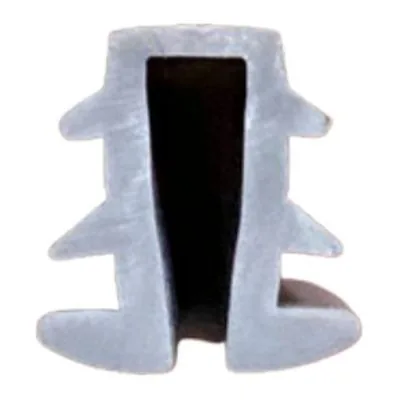
Vinil V.C. 3mmVer en el catálogo →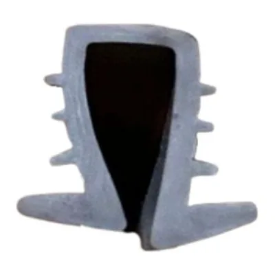
Vinil V.C. 4mmVer en el catálogo →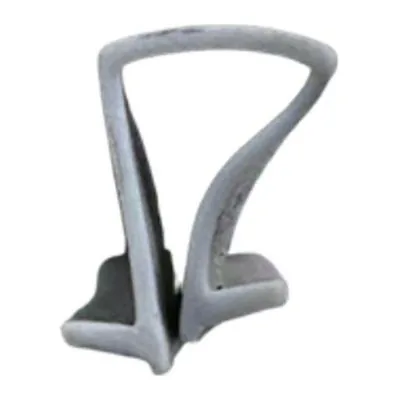
Vinil V.C. 6mmVer en el catálogo →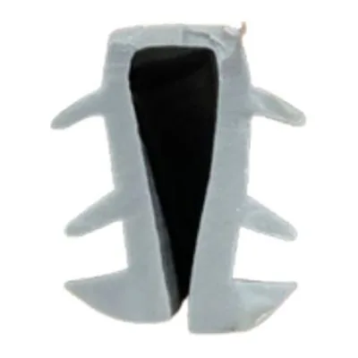
Vinil P.C. 4mmVer en el catálogo →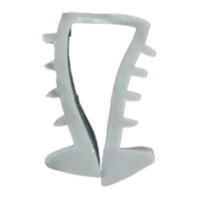
Vinil P.C. 6mmVer en el catálogo →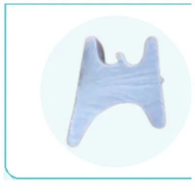
Viniles V.F. (pata de cochino)Ver en el catálogo →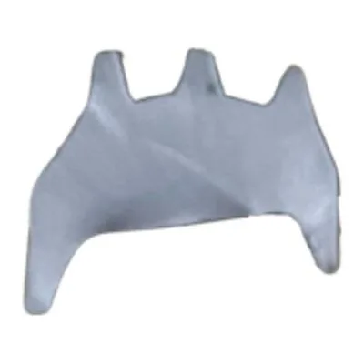
Vinil chicoteVer en el catálogo →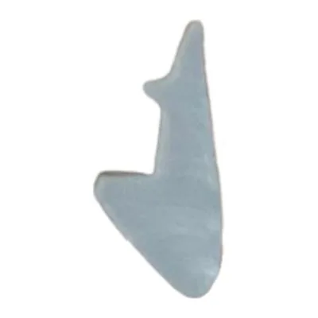
Vinil cuchillaVer en el catálogo →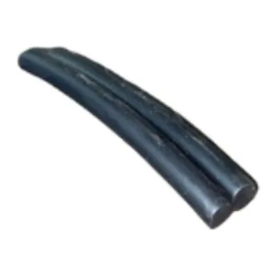
Vinil grueso para malla corredizaVer en el catálogo →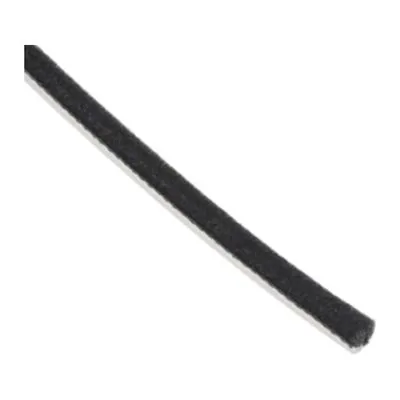
Felpa V.C.Ver en el catálogo →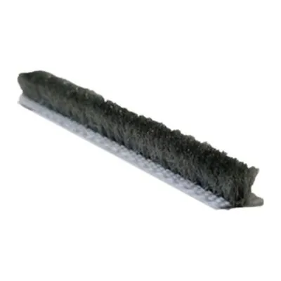
Felpa P.C. europeaVer en el catálogo →Ver toda la sección «Viniles y felpas» en el catálogo
Por qué comprar en Alumol
- Desde 1982Más de 40 años distribuyendo en Guayaquil.
- Mejores preciosAl por mayor y al por menor.
- Asesoría y cotizacionesTe ayudamos a elegir la pieza correcta.
- Entrega en la ciudadSin costo en el perímetro urbano, en pedidos de mayor volumen.
Preguntas frecuentes
¿Cómo sé qué espesor de vinil necesito?
Depende del perfil y del grosor del vidrio. Tráenos un pedazo del vinil viejo o una foto del perfil, o dinos la serie y el vidrio, y te decimos cuál va.
¿Venden por unidad?
Sí. Vendemos al por menor y al por mayor: desde una sola pieza para tu casa hasta pedidos grandes para talleres, negocios y constructoras.
¿Cómo sé cuál es la pieza que necesito?
Lo más seguro es traer la pieza vieja al local o mandarnos una foto por WhatsApp. Te asesoramos para elegir la correcta.
¿Por qué no aparecen los precios?
Los precios te los damos en la cotización, según lo que necesitas y la cantidad. Escríbenos por WhatsApp y te cotizamos.
¿Hacen entregas?
Sí. Entrega sin costo dentro del perímetro urbano de Guayaquil, en pedidos de mayor volumen y según disponibilidad del camión. También puedes retirar en el local.
¿Dónde están y en qué horario atienden?
En Lizardo García y Portete, Guayaquil. Lunes a viernes de 8:00 a 17:00; sábados y feriados de 8:00 a 14:00.
¿Necesitas viniles y felpas? Escríbenos con la foto o la medida y te cotizamos.
Cotizar por WhatsAppLlamar